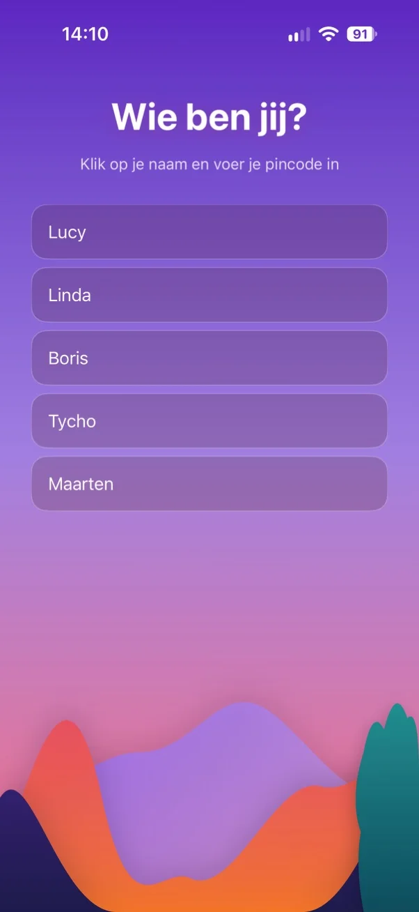
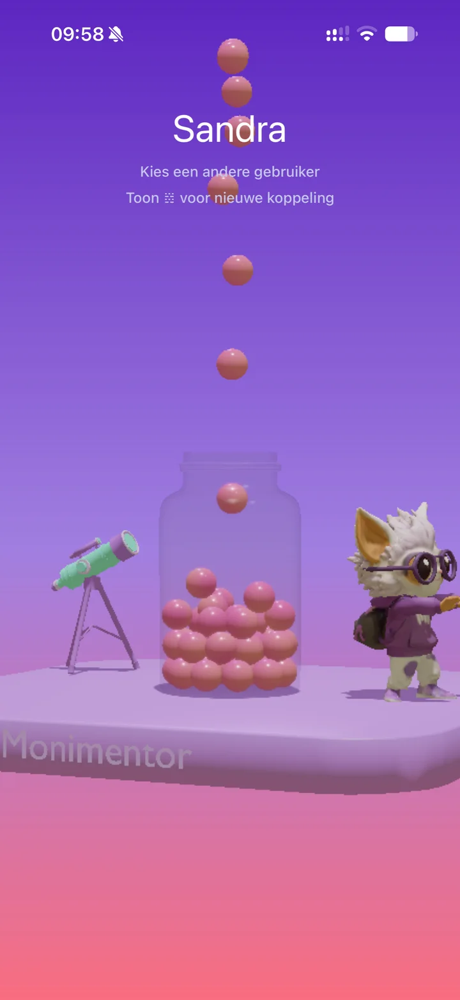
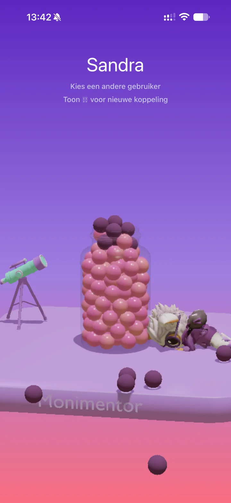
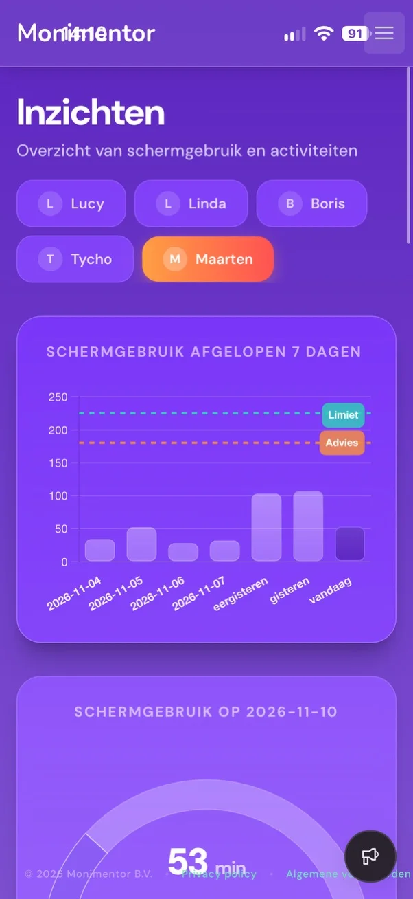
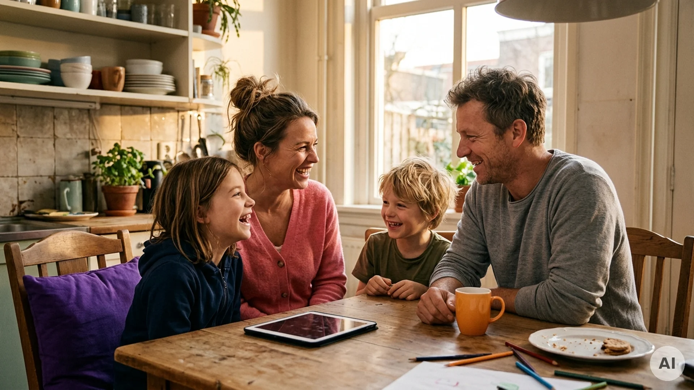

7–12 jaar • Geen eigen telefoon nodig
Minder strijd om schermtijd. Voor het hele gezin.
Elke minuut schermtijd wordt een knikker in de pot van Moni. Kinderen én ouders doen samen mee — op de familie-iPad, jouw telefoon, of voor de Switch en tv. Bouw nu samen fijne gewoontes terwijl het thuis nog gezellig is — ruim vóór de tienerjaren.
Nu beschikbaar voor iOS (iPhone & iPad). Android-wachtlijst →
Zo ziet de app eruit
Een zichtbare knikkerpot. Geen gedoe.
Iedereen in huis heeft een eigen pot — ook papa en mama. Kijk mee:

1. Iedereen een eigen pot
Kies je naam op de iPad of telefoon. Kinderen én papa en mama doen mee.

2. Kijk hoe de pot zich vult
Elke minuut schermtijd valt er live een energieknikker in de pot van Moni.

3. Pot vol? Moni wordt moe
Geen boos zwart scherm. Doorspelen mag, maar kost donkere knikkers van morgen.

4. Rustig weekoverzicht
Zie in één oogopslag hoe het met iedereen gaat — zonder politieagent te spelen.
In 30 seconden
Bekijk de app in beweging
Geen eigen telefoon nodig
Werkt op jullie iPad, jouw iPhone, of om tijd op de Switch of tv bij te houden.
In 5 minuten geregeld
Gezin aanmaken, QR-code scannen op een volgend toestel en vanavond starten.
Zonder boze buien
Moni geeft vriendelijk aan wanneer het genoeg is — niet jij.
Nu nog samen in verbinding
Dit bouw je nu aan de keukentafel.
Op de basisschool gaat het thuis vaak nog prima. Je kind kletst nog aan tafel en jullie hebben het fijn samen. Tegelijk komen de tienerjaren en die eerste eigen smartphone dichterbij — en wil je elkaar straks niet kwijtraken achter een scherm. Juist nu jullie nog zo in verbinding zijn, is dit het mooiste moment om samen ontspannen gewoontes en leuke schermmomenten op te bouwen.

“Mag ik nog 5 minuutjes?”
Je kind ziet zelf wanneer de pot vol raakt en Moni gaapt. Minder zeuren, minder onderhandelen.
“Papa zit zelf ook op z’n telefoon!”
Omdat ouders óók een eigen knikkerpot hebben, voelt het eerlijk en wordt het een leuke gezinschallenge.
“Iedereen heeft al een telefoon…”
Oefen nu samen op de iPad of tv-tijd, zodat ze straks klaar zijn voor hun eigen smartphone.
Ouders & gezinnen
Meer rust thuis vandaag.
Wat gezinnen merken zodra Moni meedoet.
Het visueel bijhouden van de tijd brengt zoveel rust in huis. Onze zoon ziet zelf wanneer zijn energieknikkers opraken en rondt rustig af — de eeuwige discussie over schermtijd is voorbij.